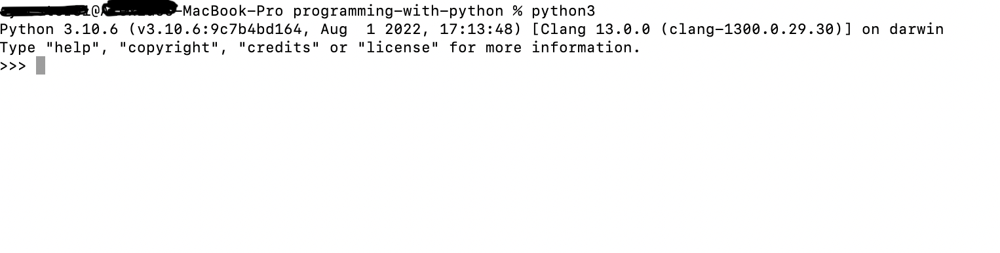

Part I - Basic Programming Concepts
Setting up the Development Environment
If at this point, you don't want to start setting up your development environment, there is an option. You can use online python interpreters. One of those is https://www.programiz.com/python-programming/online-compiler/.
Now if you want to go to the path of setting up your development environment, you're going to need two things first. The python interpreter and a text editor. In this course, we are going to use Visual Studio Code (VS Scode) as out text editor. You can use anything you want if you have others installed but this is what we will be using in the demonstration of codes in this course. VS Code is also what I'll use during the online video lectures. Now make sure to install it if it's what you're going to use from the link provided above and just follow the installation prompts with the default values.
Next is to install the python interpreter from https://www.python.org/downloads/. Make sure to install the latest version of python. At the time of this writing, the latest version is {python_version}. There is only one thing to note and remember here during installation prompt on windows, at the first prompt, the installer will will have a checklist of installation parameters, one these is [ ] Include python path to environment variables, make sure to check that box as it is not checked by default.
If you checked the box to include python path in the environment variables and successfully installed the python interpreter and you have successfully installed Visual Studio Code or your editor of your choice, you are now good to go.
To ensure that python is installed on your system, open your terminal (for Unix based systems) or command prompt (for Windows users) and type in the command python. This should open your interactive interpreter like this one.

This is from my terminal, as you may notice, I typed in the command python3. It's because I have both python version 2 and 3 on my system. In your case, you may just enter the command python. If you seen the python version you installed, then you now have python interpreter working.
Basic Syntax
Variables and Data Types
Type Casting
Python Reserved Keywords
| False | def | if | raise |
| None | del | import | return |
| True | elif | in | try |
| and | else | is | while |
| as | except | lambda | with |
| assert | finally | nonlocal | yield |
| break | for | not | class |
| form | or | continue | global |
| pass |
Above are the reserved keywords for the Python programming language. We can use them but we cannot declare names with same name as listed above.
For example, we cannot define a variable named `global` as it is a reserved word for the language like so:
global = "Assigning a string to the keyword 'global'"